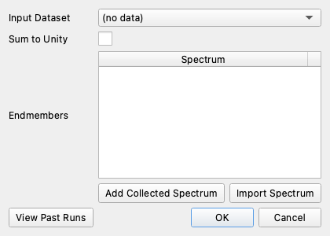

Linear Unmixing#
Linear unmixing models every pixel’s spectrum as a weighted sum of a few endmember spectra (the pure materials in the scene) and solves for the weight, or abundance, of each endmember in that pixel.
How it works#
For each pixel the tool solves a least-squares fit (the normal equations) of the pixel spectrum against the stack of endmember spectra. The output is a new dataset with one abundance band per endmember (in the order you listed them) plus a final RMSE band giving the per-pixel reconstruction error, so you can see where the chosen endmembers fail to explain the data.
Bands flagged bad in either the dataset or an endmember are excluded from the fit. Endmembers must share the input’s wavelength grid.
Sum to Unity (optional) softly forces each pixel’s abundances to add up to 1, which is appropriate when you believe your endmembers cover everything in the scene. The spin box sets the penalty weight; larger values enforce the constraint more strongly.
The result is added as a new dataset named Linear Unmix: <source>, N endmembers.
Using the tool#


Choose an Input Dataset.
Build the Endmembers list (at least two): Add Collected Spectrum to pick from spectra collected in-app, or Import Spectrum to load them from a text file. Use the trash button on a row to remove it.
Optionally tick Sum to Unity and set its weight.
Click OK. The run proceeds in the background.
Click View Past Runs to revisit a previous run. It re-plots that run’s endmembers and brings back its input and output datasets.